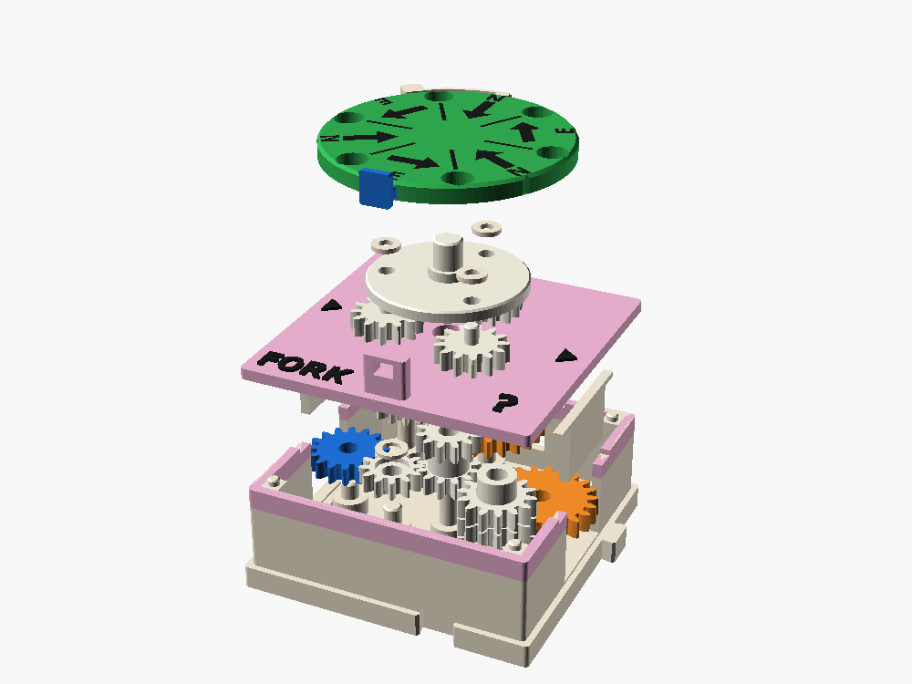

← All gear boxes · family: SPIN · FORK · SHUFFLE
FORK ?
The line comes in on West and leaves East or North, and a flick of the wheel decides which. It's the Blue Ball Machine's random junction, and the gear system's first "if".
1 cell · W in (16) · E out (22) or N out (24) · x1 · cost 5
Roll, lock, route
1. Roll
Flick the green wheel on the lid. It coasts, clicks, and a spring detent parks it on one of six sectors: E, N, E, N, E, N. The sector by the blue lock on the south edge is the result.
2. Lock
Push the blue latch in. Its tooth drops into the notch under it and holds the wheel still.
3. Route
Crank West. The line comes out East or North, whichever came up. Unlock and flick again for the next choice.
For a software person this is sample-and-hold: the roll is the random draw, the lock holds the sample, and the route uses it. if (coin()) east(); else north();
Flick, then crank
A small model of the box. Flick to roll, then crank: the line follows the planet that sits on an output. Crank without locking and watch the carrier walk.
A turret of planets round the line's sun
The wheel turns a planet carrier inside the box. The line drives a sun gear in the middle, and three planets ride round it on the carrier, always in mesh. Two output stacks stand outside the planets' circle: X at the south-east drives East, Y at the north-west drives North. They are exactly 180 degrees apart round that circle. With planets every 120 degrees and the wheel resting every 60, a planet sits on X at every other rest and on Y at the rests between, never both.
| Path | Gears | Meshes |
|---|---|---|
| To East | W 16 → I 12 → Z 12/sun 12 → planet 13 → X 14 → E 22 | 5, forward, x1 |
| To North | W 16 → I 12 → Z 12/sun 12 → planet 13 → Y 14 → N 24 | 5, forward, x1 |
The planets never leave the sun, so nothing clashes while the wheel coasts. They roll through X and Y in mesh, which twitches the outputs a little during a roll. The sun is on layer 3, above the input gears, so the planets pass over everything else in the box.
Why there's a lock
When you crank, the planet passes torque from the sun to the output and pushes back on the carrier with about twice the force. That is a few tens of mNm, ten times what the detent spring holds. Without the lock the carrier walks round and the line slides off its output. Leave the lock out once on purpose: it shows why a program has to hold a sample before using it.


Fit-checked in OpenSCAD, not yet printed
The fit check is clean with the wheel on E and on N. Verify on the first print: the latch's hold and travel, the carrier's long center pin and its wobble, the planet axles and caps, how much the planets passing X and Y shortens the coast, and an E/N tally for bias. A crank-rolled version (rolled from S through SPIN's freewheel) is a possible variant.